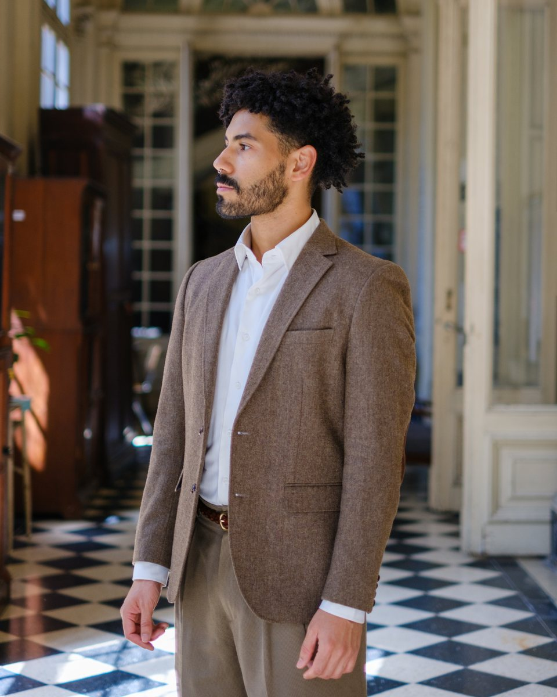

WORK DOSSIER / PHOTOGRAPHY · PORNOGRAPHY · ANTHROPOLOGY
Portfolio
01
Bio

Ezequiel Aguilera (Lechería, Venezuela, 1994) is a photographer and anthropologist. He lives and works in Buenos Aires. His photographic practice deals with eroticism, the nude and pornography, with particular attention to the situations in which images are produced, the relationships between those who take part in them, and the ways they circulate.
Between 2019 and 2020 he developed Putas con tiempo, a collaborative project that brought together pornography and street graphics through photography, collage, stencil, spray paint and paste-ups. The project was documented in the film Coger contra todo (2021) and discussed in an article in Avances, the journal of the Faculty of Arts of the Universidad Nacional de Córdoba (2023). In 2019 he exhibited photographs at the Museum of Anthropology of the Universidad Nacional de Córdoba. He is currently working with production and backstage material from pornographic scenes between men.
He holds a degree in Anthropology from the Universidad Nacional de Córdoba, where he is a PhD candidate in Anthropological Sciences with a CONICET fellowship. He trained in the semiotics of the photographic image at the Centro de Estudios Avanzados of the UNC (2023), in audiovisual language at ENERC, and in screenwriting, film directing and audiovisual production.
Statement
My work addresses the relationships between bodies, images and sexualities, with particular attention to the situations in which images are produced and the ways they circulate. Through photography, performance and street art I work with eroticism and the exposure of bodies as part of a collaborative practice. Ethnographic research accompanies this process and allows me to situate each record in relation to the relationships, decisions and contexts in which it is made.
I am currently working with digital production and backstage material from pornographic scenes between men. I am interested in the transformations images undergo as they circulate and meet different forms of reception, and in the relationships built around them. At a time when platforms and social media increasingly encourage the display of production processes, the backstage is a starting point for asking what happens when what used to remain out of frame also becomes an image, available to be seen, selected and put into circulation.
02
Series
Backstage
Digital photography and digital intervention
Dimensions variable
2023–2025
Scenes from the production of sexual content between men. Sexual acts appear as black silhouettes cut out against the real interior; the photographs that show faces do not show the act. The series works on the boundary between what is displayed and what must disappear for the image to be able to circulate.
Digital photography, action in public space, PVC and spray paint
Dimensions variable
2025
A street action during my stay in Rio de Janeiro: the performer’s body and the slogan written on the ground and on plastic sheeting put pornographic work into the language of labour. Production: Caian Rangel. Model: Fernando Brutto.
A body on the Rio coast, between rock, sea foam and a cloak that both dresses and exposes it. Production: Caian Rangel. Editing: Charlie Black. Model: David Cerdas.
Photography, collage, stencil on X-ray film, spray paint and wheatpaste
Dimensions variable
2019–2020
More than twenty productions that took up pornography, in the sense of the sexually explicit, to circulate on social media and as posters pasted up in the street. The project was in dialogue with the post-porn and street art scenes of Córdoba. Several posters reuse my own photographs, some from Prakash, with slogans stencilled and sprayed on top, pasted up in public space. It was documented in the film Coger contra todo (2021).
Collaborative project · Shown at the Museum of Anthropology, UNC (2019)
Between 2017 and 2018 I photographed marches and demonstrations in Córdoba: the struggle for the legalisation of abortion, teachers’ protests, actions by sex workers and the demand for the appearance of Santiago Maldonado. At some of these events I proposed photographic devices built around signs. In 2017, for the seventeenth anniversary of AMMAR Córdoba, I portrayed the people holding the organisation’s signs. That same year, during the demonstrations for Santiago Maldonado, I portrayed 127 protesters holding the same sign. Aligned on its surface, the portraits form a sequence and, at the same time, a mosaic of faces that turns the individual image into a collective composition.